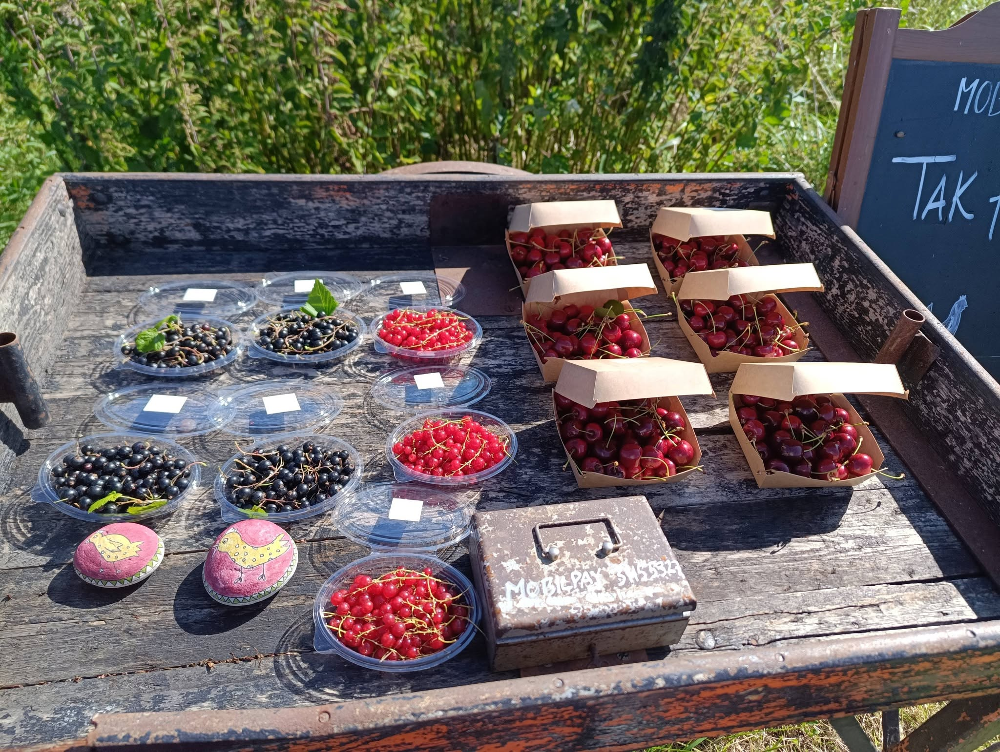
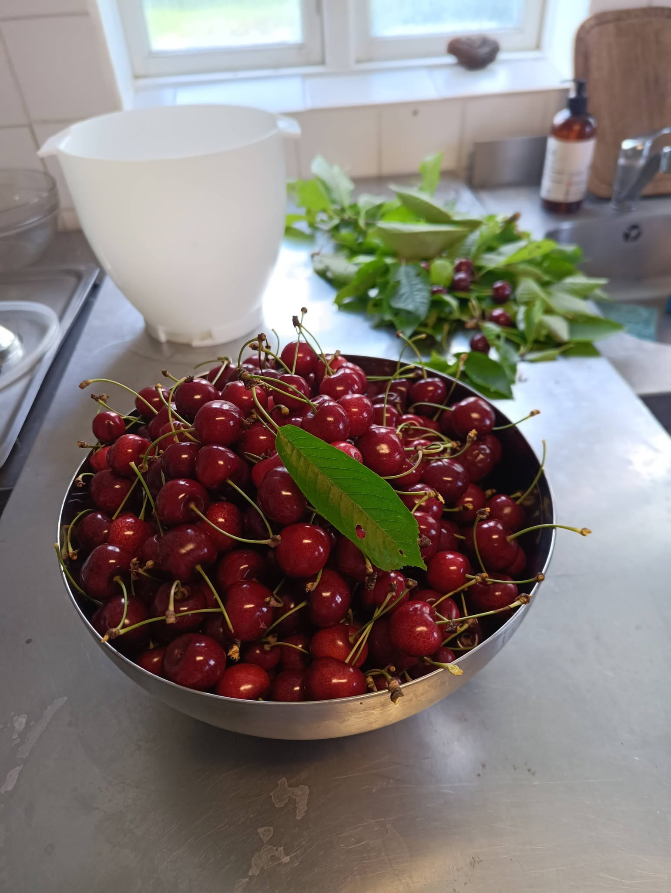
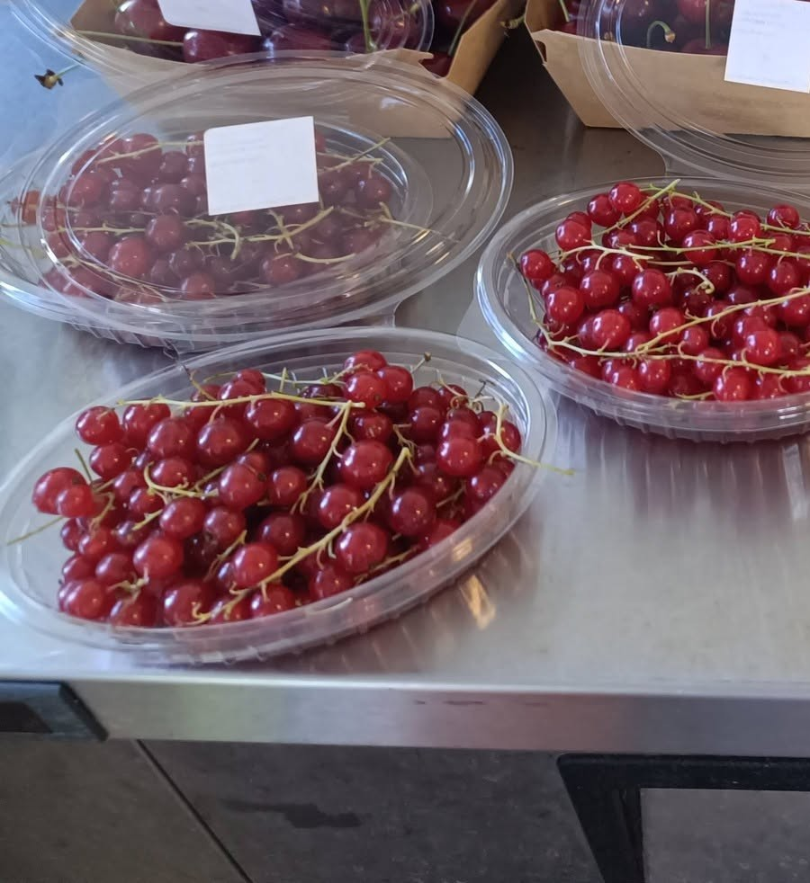
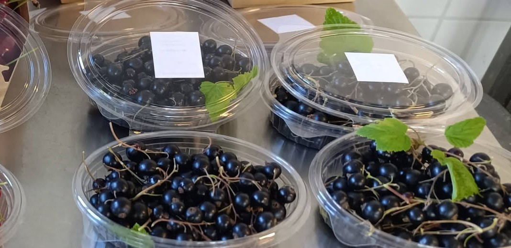
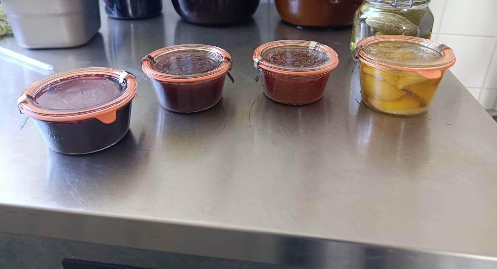
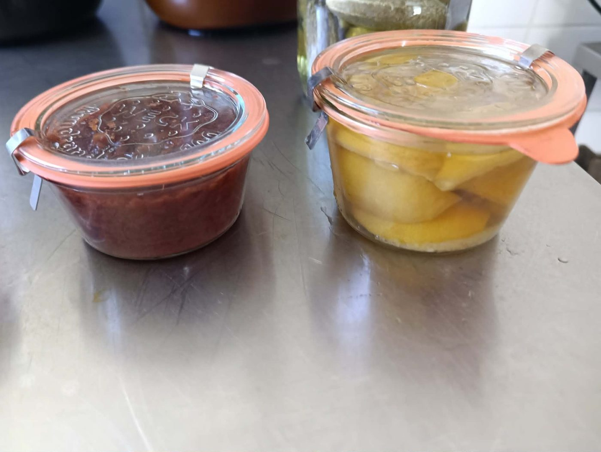
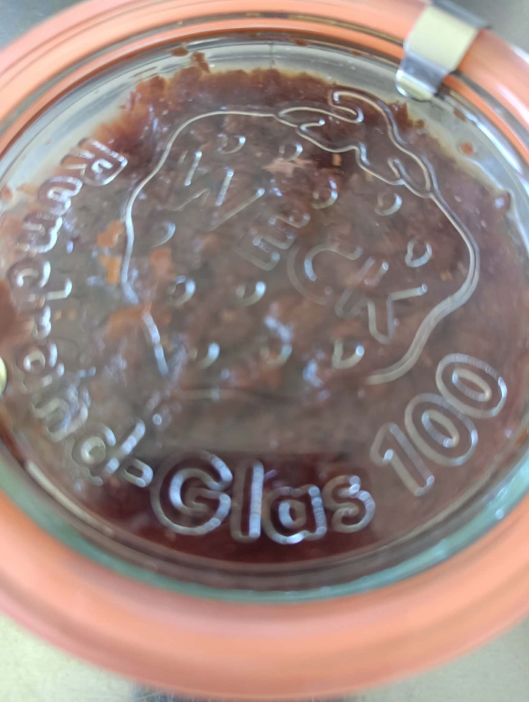
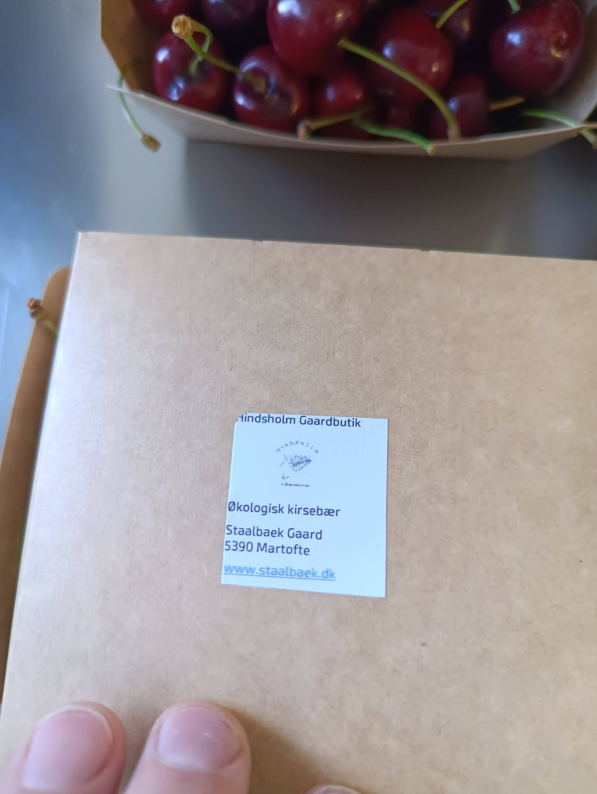

Økologiske bær og grøntsager, dyrket med god tid og solgt fra vores egen bod ved vejen. 100% frugt og grønt — CO2-neutralt, som altid.

Kirsebær, ribs og solbær — plukket i hånden og pakket samme dag. Og snart: syltetøj, kompot og pickles på glas.

Søde, saftige kirsebær — et af de mest efterspurgte produkter fra boden om sommeren.

Røde ribs med den helt rigtige syrlighed — gode til saft, gelé eller lige til ganen.

Mørke, aromatiske solbær, fyldt med smag. Populære til saft, syltetøj og bagværk.

Hjemmelavet på glas, lavet af gårdens egne bær og grøntsager. På vej til boden.
Se hele historien om, hvordan det dyrkes, under Frugt & Grønt →


Syltetøjet, kompotten og pickles sælges på genbrugte glas. Tanken er en pantordning: du betaler et depositum for glasset, og får det tilbage, når du afleverer et tomt glas i boden.
Vores bod står fremme ved vejen — en ærlighedsbod, hvor du selv vælger og betaler. De fleste betaler med MobilePay, men kontanter virker også i kassen.
30 kr. pr. bakke · 4 for 100 kr.Følg @hindsholm_gaardbutik på Instagram, og se når der er nyt i boden.

Alt, hvad vi sælger, er økologisk — det kan du se på hver eneste etiket, der forlader gården. Vi er desuden en del af Your Footprint, som beregner og neutraliserer gårdens CO2-aftryk.
Læs mere om gårdens fulde tilgang til bæredygtighed under Bæredygtighed →